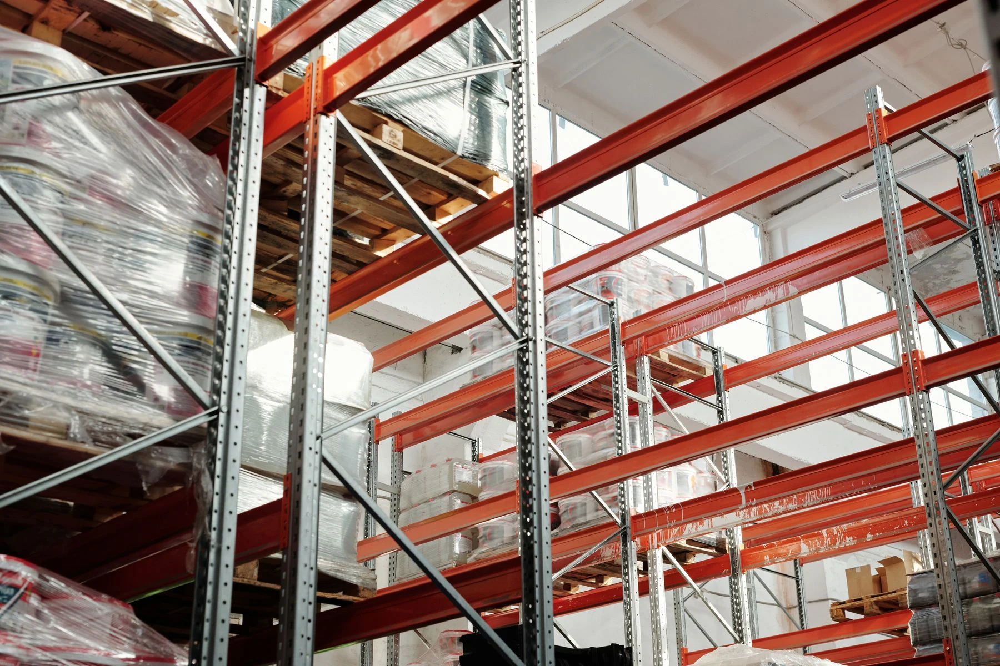
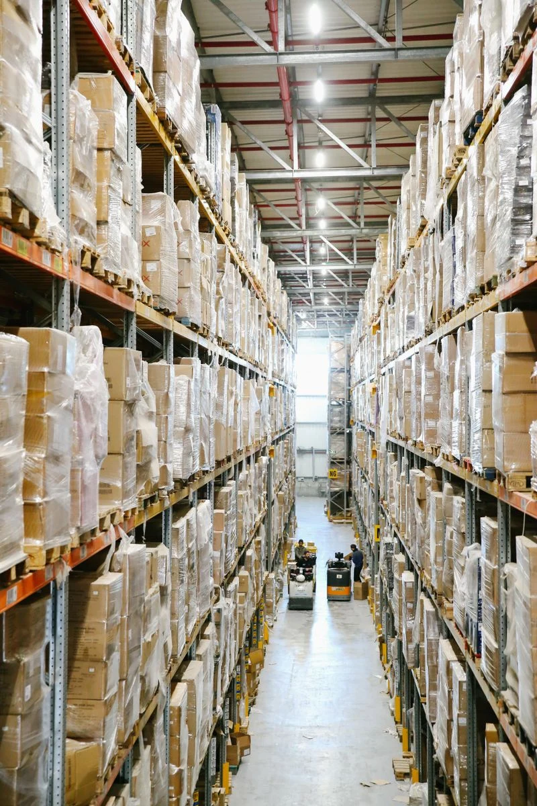

SEU PRÓXIMO PROJETO
Qual é o tamanho do seu estoque?
Medidas do local, tipo de pallet e peso da carga ajudam a equipe a orientar a configuração.
Conversar sobre o projeto ↗FAITH GÔNDOLAS · BRASÍLIA

Uma estrutura à altura do seu estoque.
Organize cargas paletizadas e aproveite o espaço do seu depósito, atacarejo ou centro de distribuição.
Solicitar orçamento Ver produto e medidasESTÚDIO 360°
Arraste para girar a estrutura e use o zoom para ver os detalhes.
Estúdio · 360°ESCOLHA SUA ESTRUTURA
Conheça o porta pallet industrial e a linha complementar para mercadorias com acesso manual.
Definido em projeto
Ver em 3D 360°SEU PRÓXIMO PROJETO
Medidas do local, tipo de pallet e peso da carga ajudam a equipe a orientar a configuração.
Conversar sobre o projeto ↗
200x120x60/80 com 3 longarinas · 200x180x60/80 com 3 longarinas · 300x120x60/80 com 4 longarinas
Ver em 3D 360°DO COMÉRCIO AO DEPÓSITO
Inspirações de aplicação em depósitos, estoques comerciais e centros de distribuição.
Estruturas para organizar cargas paletizadas.

Organização de mercadorias para reposição.

Circulação e disposição planejadas para o estoque.
VAMOS ORGANIZAR SEU ESPAÇO
Envie as medidas do local e o tipo de mercadoria. Nossa equipe orienta a configuração e prepara seu orçamento.
Fotografias de referência com tratamento digital. As configurações exibidas devem ser confirmadas no orçamento. Ambientes ilustrativos: Tiger Lily, On Shot e Maor Attias / Pexels.